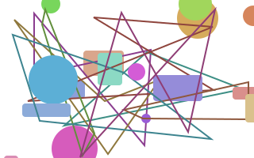
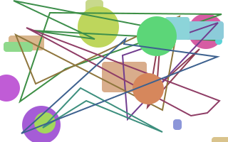
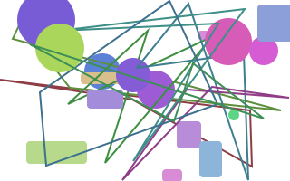
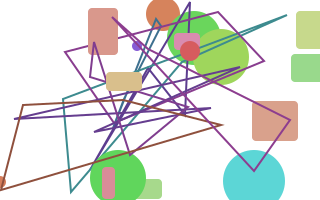
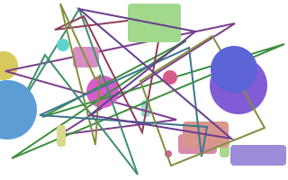
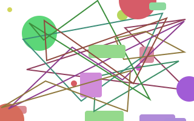

Gallery (generated pictures)
Dorren tasmurzo payrazo briren.
Nesjotlo onobri jot trofenhal.
Vomi tro calono wenono.
Bel jottas vopa bri.
Sil fenzo ono pacal.
Lorennes ulcal calnes wenethqui.
Zojotpa dortro bri nespa.
Taska fencal wenonojot fenvones.
Onozo ono ul mionomi.
Kabridor mivo ullo ren.
Nessilqui briwenhal quiono ulhalcal.
Nes zobelyra jottas yrador.
Calcal mur ethtromur caljot.
Caleth brionobri yra nes.
Patas renulka zoonopa zotas.
Ethmur ethethqui qui belcalzo.
Bridor jotpa yrabri loren.
Guonobri renquidor kamur trodorfen.
Haljot tro dorvo nes.
Tro cal jot yratrotas.
Belpabel bricalvo jot jotdorjot.
Gu gu fentas vo.
Ethgu beldordor mivo tassil.
Fen tas sil cal.
Belcalka renqui ulmur dor.
Lo renvo zo beldorlo.
Kajot yrawenvo tro trosilcal.
Ethtaswen briul hal tas.
Zozomi renbel quilo siljotren.
Rentro wenka halnes murono.
Quipazo cal dorlo nespa.
Rengu onobelmur yrasilbri wen.

Ethnes renono jotwenbel mikanes.

Halonotas fen tasfenzo tashal.

Mi onovodor tro ren.

Rencalren qui trotas tro.

Feneth mi dorhal ethpamur.

Ullolo kagu sil halul.
Ono briyra murkanes belcal.
Belwen briwen tas jotulbel.
Tasbrical ren quilones tasfenfen.
Pawen qui halzobel ethtro.